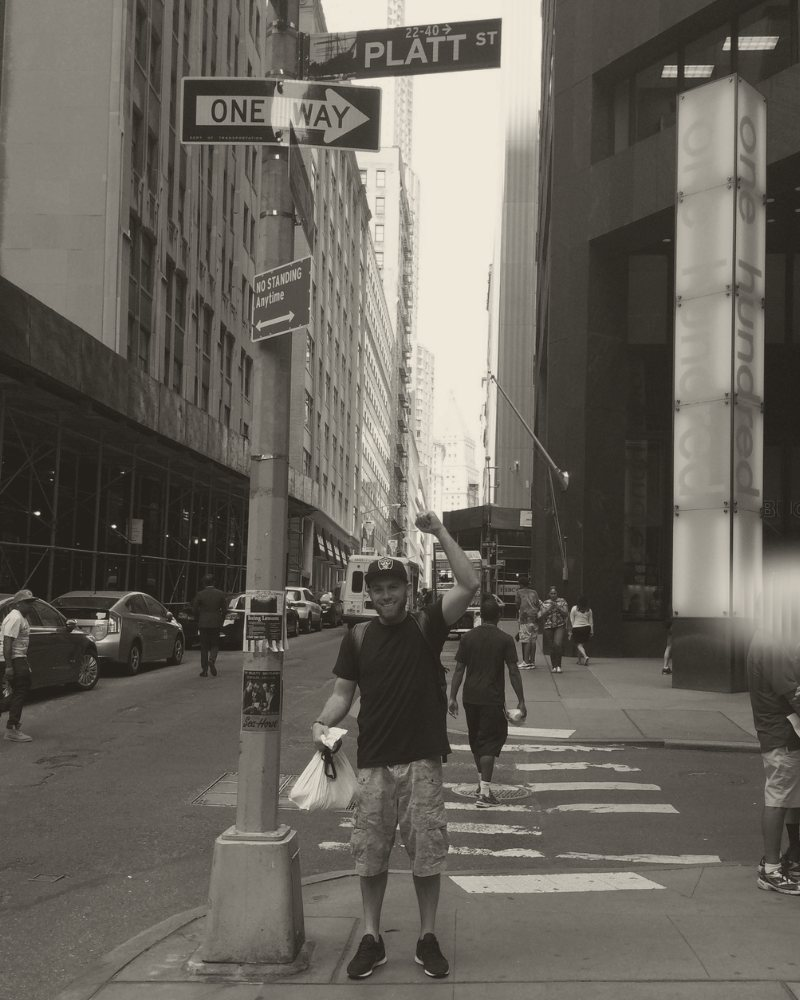
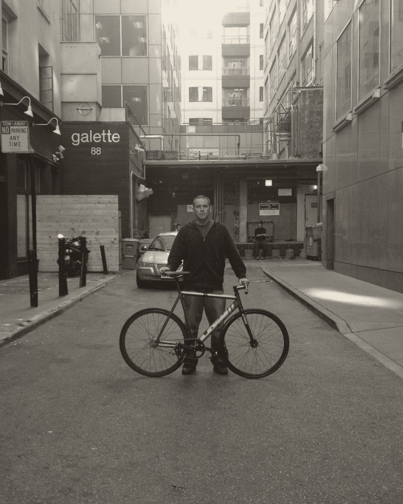
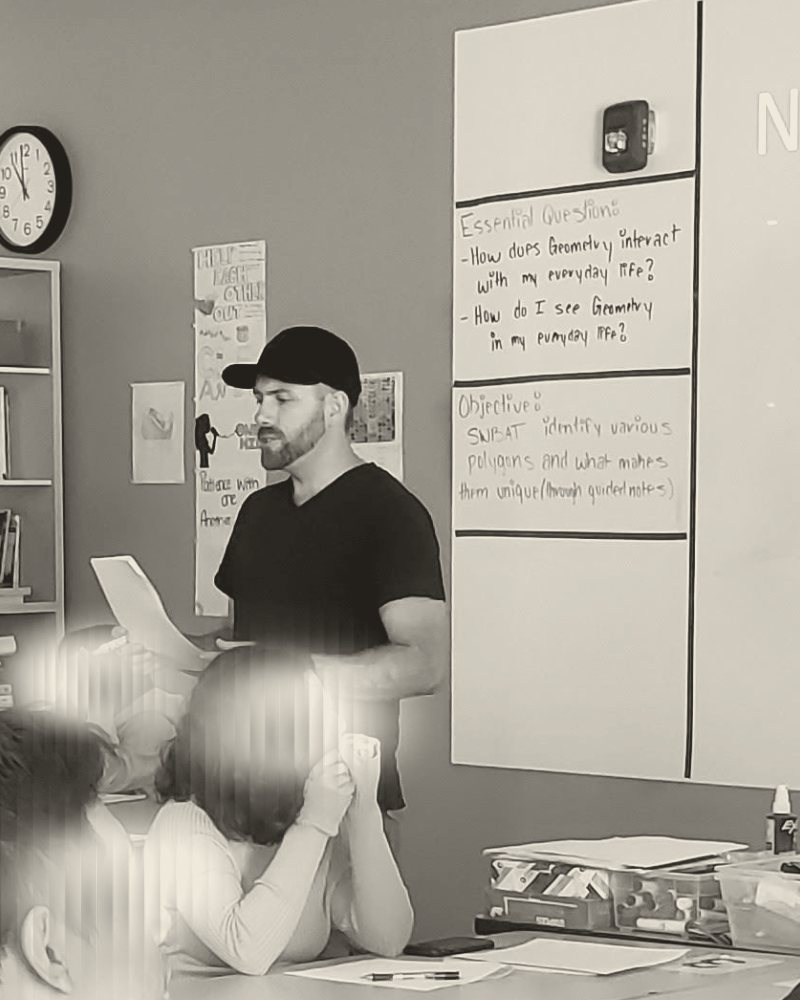
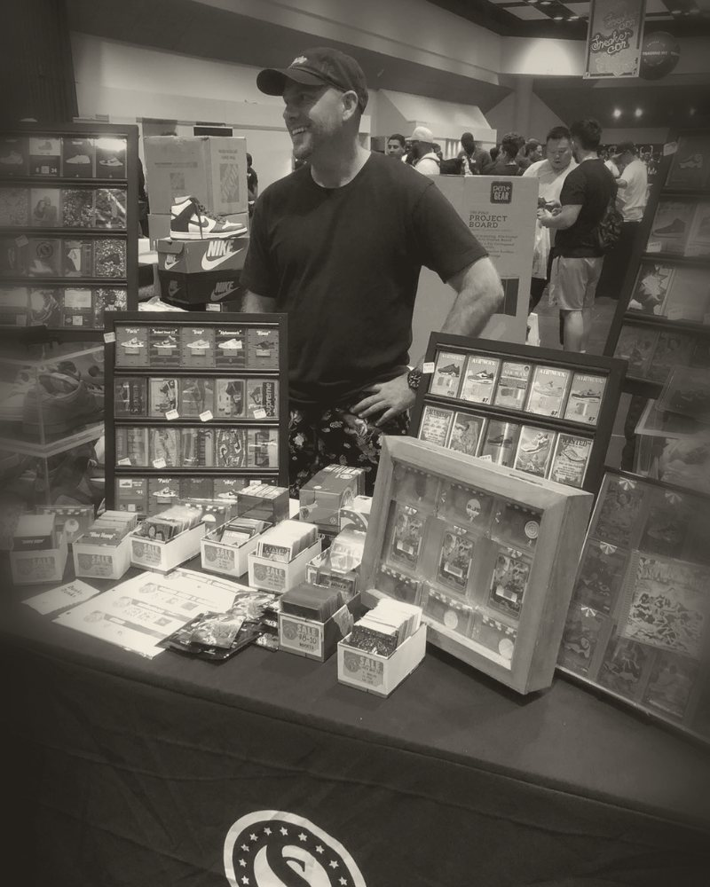

01 JTWall Street
I kept the books for trading desks at Bear Stearns and GFI. Got a front-row seat to the financial crisis from the brokerage side.
james t. platt — jt

Five different worlds, same move: learn how the room works, then build the thing it's missing.

01 JTI kept the books for trading desks at Bear Stearns and GFI. Got a front-row seat to the financial crisis from the brokerage side.

02 JTThree startups that were quietly the same team chasing one product through two pivots and an acquisition. I built front ends, including a Budweiser Super Bowl microsite that reached 40 million people.

03 JTTaught geometry and computer science to teenagers in East Oakland, and earned a CTE credential doing it. Hardest job on this page, and it isn't close.

04 JTI built The Sneaker Savant, a sneaker grading and consultancy practice. Grew a 17,000-person community, analyzed over 100,000 pairs, and figured out how to benchmark my hobby.
Now I'm in state IT in Sacramento, working up the classification ladder and automating the parts of government nobody enjoys. The other four panels are things I did; this one I'm still in.
selected work · closer up

A personal distributed system that runs my job search. A daily launchd cron on my Mac crawls four public-sector job boards, scores each posting against a structured inventory of my experience in two tiers (a cheap deterministic filter, then an LLM pass on the survivors), and publishes a static report the server serves behind auth. Rate-limited, robots-aware, and built so an empty scrape never overwrites the last good run.
Built The Sneaker Savant, a sneaker grading and consultancy practice, from nothing. Grew a 17,000-person community, analyzed over 100,000 pairs, and released several sneaker trading-card sets.
A community-engagement microsite for Budweiser's "Heroes" Salute at Super Bowl XLVIII, built with Folds of Honor and reaching more than 40 million people. It ran the campaign's voting and user-generated content: visitors nominated their own veterans and voted on the National Guard homecoming parade at its center. Real product behind the ad, not a static page. Built at Thismoment, whose curated content streams predated the timeline interface Facebook later made standard.
Early product development at an ad-tech startup. Managed ad-server systems for hundreds of clients and ran delivery as the team scaled from 4 to 20+ people, through its acquisition by RewardStyle.
Taught Geometry and Computer Science in East Oakland, built a Geometry curriculum to California standards from scratch, and earned a California Career Technical Education credential.
the full record
technology & it
finance & analysis
teaching & cte
education & credentials